Index and search your
entire digital life
A personal data substrate that gives AI agents — and you — instant recall across email, messages, notes, calendar, health, files, and more. Everything stays on your hardware.
Free & open source · macOS or Linux
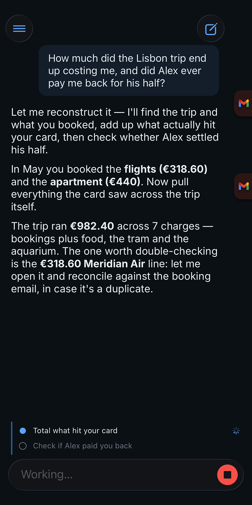
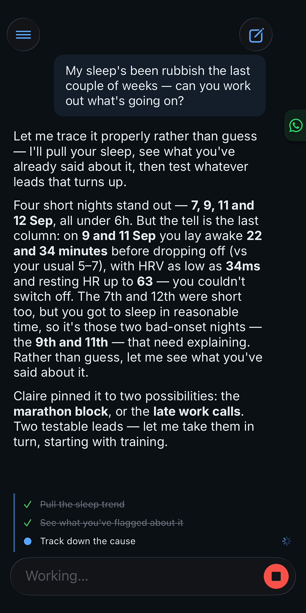
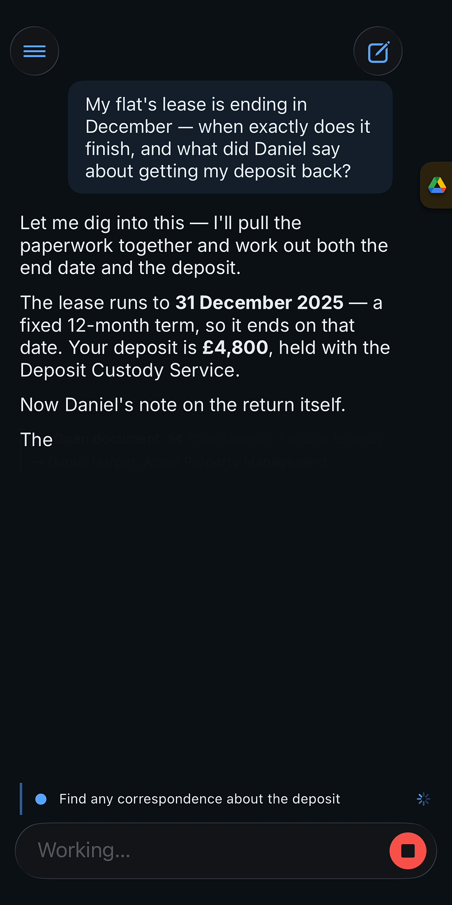
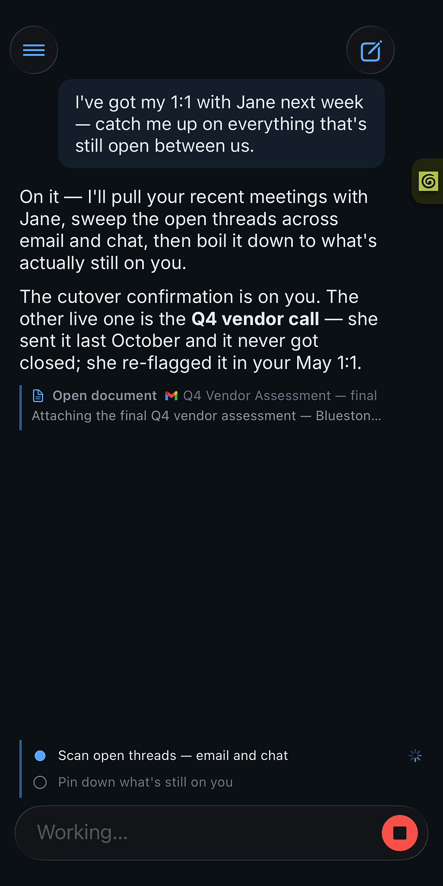
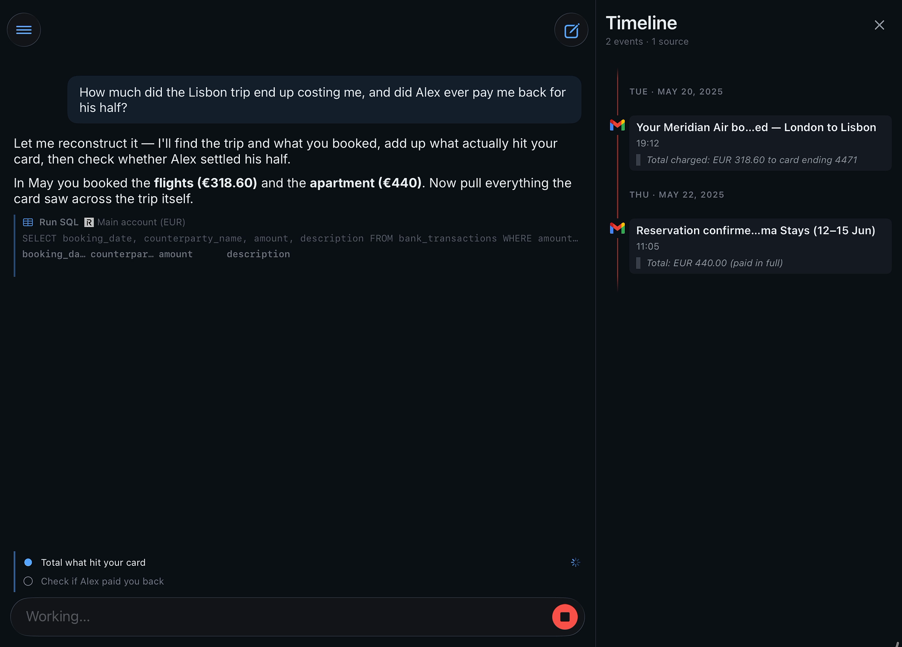
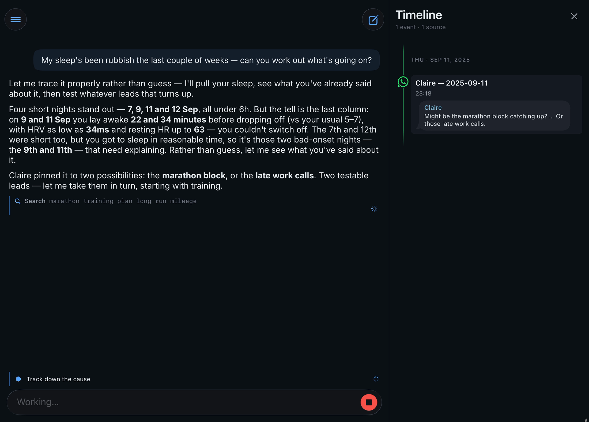
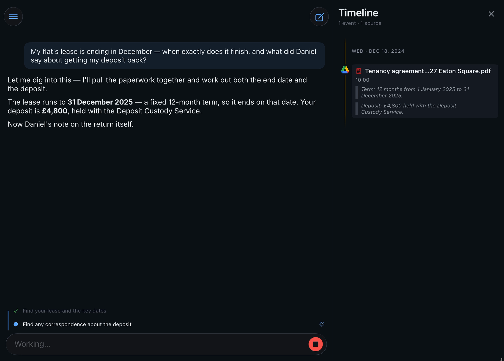
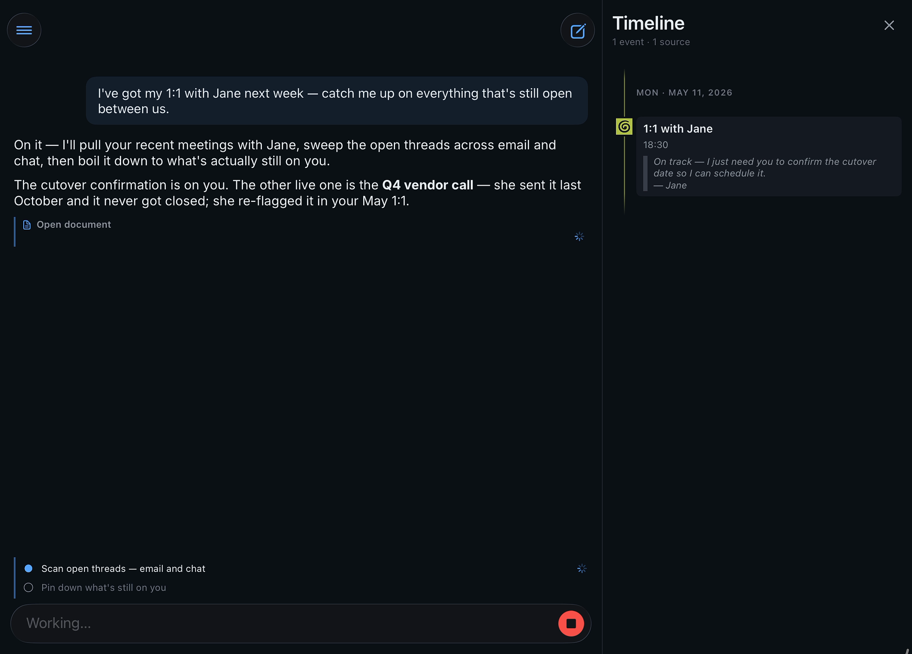
Your data, indexed
in the background
Omnesis syncs from the services you already use into a single local store, understands the connections between people and documents across your digital life, and makes everything searchable and queryable.


Your whole life,
one private index
The inbox, the group chat, the run you went on, the receipt you photographed — one index on your own hardware.
Every message you’ve sent or received — attachments included.
Conversations
Group chats, text messages, voice notes, and the plans you actually made in them.
Notes & files
The ideas you wrote down somewhere — notes, pages, drafts, and documents.
Calendar
Where you were and what’s next — every event, going back years.
Tasks
Everything you promised yourself you’d do — done, pending, and long forgotten.
People
Everyone you know. Omnesis resolves identities across their emails, phone numbers, and handles.
Health & movement
Sleep, workouts, heart rate — and the runs and rides you went on.
Meetings
Summaries and full transcripts of the meetings you sat through.
Photos & screenshots
The text inside them — receipts, whiteboards, screenshots — read on your phone, never uploaded.
The web you read
Pages you visited, saved, and kept coming back to.
Money
Where it went — accounts, transactions, balances, and holdings.
Phone & screen
Which apps ate your evening, who called and when — the rhythm of your days.
Places you’ve visited
Named places where you spent time, with arrivals and departures — resolved on your iPhone.
Every source is opt-in and syncs automatically in the background.
Minutes to set up.
Zero maintenance.
Connect a source with one click. Omnesis handles the rest in the background.
omnesis ❯ omnesis sources add gmail
Google Account Setup
Open this URL in your browser:
https://accounts.google.com/o/oauth2/v2/auth?client_id=123456789012-abc…apps.googleusercontent.com&response_type=code&scope=gmail.readonly&state=a3f9c1e8d2
omnesis ❯ omnesis sources add whatsapp-messages
WhatsApp Pairing
On your phone, open WhatsApp →
Linked Devices → Link a Device, then scan:
✓ Linked +1 (415) 555-0182
A unified graph of
your digital life
Omnesis doesn't just store documents — it understands the relationships between them. People, emails, conversations, documents, attachments, ... all form a connected graph that makes context retrieval fast and powerful. From it, AI agents can trace the social journey of a document or topic across sources, and ground their answer with a timeline of events annotated with citations.
"Hey Sam, sending over the contract for you to sign! — John"


Private by design,
flexible by choice
Your index stays on hardware you control and can be encrypted at rest. Cloud inference is off by default, and you decide which configured roles — if any — may send data to a provider.
Choose your models
Embedding, OCR, audio transcription, and the Omnesis agent can each run fully on your machine — or call a cloud model when a task is worth it. You decide what’s worth sending out.
- Embedding Turns your documents into vectors for search. Local Cloud
- OCR Reads text out of images and scanned PDFs. Local Cloud
- Audio transcription Converts voice notes and audio into searchable text. Local Cloud
- Omnesis agent Reasons over your index to answer in natural language. Local Cloud
Local runs in-process — node-llama-cpp, whisper.cpp, Apple Vision — or your own vLLM server. Cloud connects to any OpenAI-compatible endpoint, with first-class Anthropic API support and a Codex integration that runs the agent on your ChatGPT subscription. We recommend using zero data retention inference providers.
A safe-by-default agent
The built-in Omnesis agent can do exactly one thing: recall and make sense of your data, via the companion app. It has no other tools and no access to the internet, so there is nothing for it to leak.
Omnesis Privacy Gate
You can also point your own agent (openclaw, hermes, claude, etc) to Omnesis via an agent to agent protocol. This allows pairing the powerful recall and reasoning over your digital life that Omnesis offers with the ability to act in the digital world.
To do this safely, Omnesis offers the ability to author a policy that describes what information can be shared with external agents or when approval should be required via a notification on the companion app. The Omnesis Privacy gate can also release information with reductions (i.e redacting sensitive information).
Manage from anywhere
CLI for power users. Web portal for visual exploration. iOS and android apps for on-the-go management and use of the Omnesis agent.
omnesis ❯ omnesis status
Omnesis Status (DB: 2.1 MB) Source State Count Idx Size Synced Int Ingested Range Indexed Range ──────────────────────────────────────────────────────────────────────────────────────────────────────────────────────────────── ✓ apple-contacts:john@icloud.com synced 10 contacts 100% 3.4 KB 1m ago - 04/04/22-01/07/24 04/04/22-01/07/24 ✓ apple-health:ios-synth-johnsmith synced 416 samples - 0 B 1m ago - - - ✓ apple-imessage:john@icloud.com synced 21 messages 100% 5.6 KB 2m ago - 06/09/25-14/09/25 06/09/25-14/09/25 ✓ apple-notes:john@icloud.com synced 10 notes 100% 3.6 KB 1m ago - 22/08/25-14/09/25 22/08/25-14/09/25 ✓ apple-reminders:john@icloud.com synced 10 reminders 100% 3.5 KB 1m ago - 01/09/25-13/09/25 01/09/25-13/09/25 ✓ browser-history:chrome synced 1,014 visits 100% 89.3 KB 1m ago - 01/09/25-14/09/25 01/09/25-14/09/25 ✓ chrome-bookmarks:johnsmith@gmail.com synced 10 bookmarks 100% 4.3 KB 1m ago - 18/08/25-10/09/25 18/08/25-10/09/25 ✓ gmail:johnsmith@gmail.com synced 26 emails 100% 18.5 KB 1m ago - 22/04/24-03/11/25 22/04/24-03/11/25 ✓ google-calendar:johnsmith@gmail.com synced 10 events 100% 6.0 KB 1m ago - 29/08/25-13/09/25 29/08/25-13/09/25 ✓ google-contacts:johnsmith@gmail.com synced 10 contacts 100% 3.5 KB 1m ago - 04/04/22-01/07/24 04/04/22-01/07/24 ✓ google-drive:johnsmith@gmail.com synced 11 files 100% 5.4 KB 1m ago - 18/12/24-11/09/25 18/12/24-11/09/25 ✓ notion-databases:user_john_smith synced 10 rows 100% 7.8 KB 7m ago 30m 15/08/25-11/09/25 15/08/25-11/09/25 ✓ notion-pages:user_john_smith synced 10 pages 100% 4.3 KB 7m ago 30m 10/08/25-11/09/25 10/08/25-11/09/25 ✓ obsidian-notes:Personal synced 10 notes 100% 4.8 KB 1m ago - 12/08/25-11/09/25 12/08/25-11/09/25 · omnesis-chat idle 0 docs - 0 B - - - - ✓ outlook-email:john.smith@acme.com synced 10 emails 100% 5.0 KB 1m ago - 02/09/25-10/09/25 02/09/25-10/09/25 ✓ screen-time:john@icloud.com synced 963 sessions - 0 B 1m ago - - - ✓ strava-activities:7000000 synced 29 activities 100% 6.4 KB 1m ago - 04/09/25-08/05/26 04/09/25-08/05/26 ✓ things:local synced 10 tasks 100% 4.3 KB 1m ago - 04/09/25-13/09/25 04/09/25-13/09/25 ✓ whatsapp-messages:+15550100 synced 41 messages 100% 10.9 KB 1m ago - 08/02/25-22/03/26 08/02/25-22/03/26
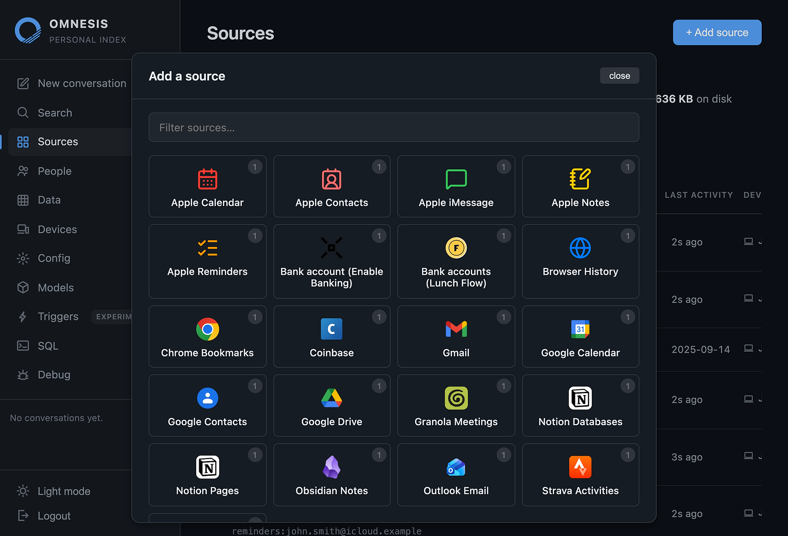
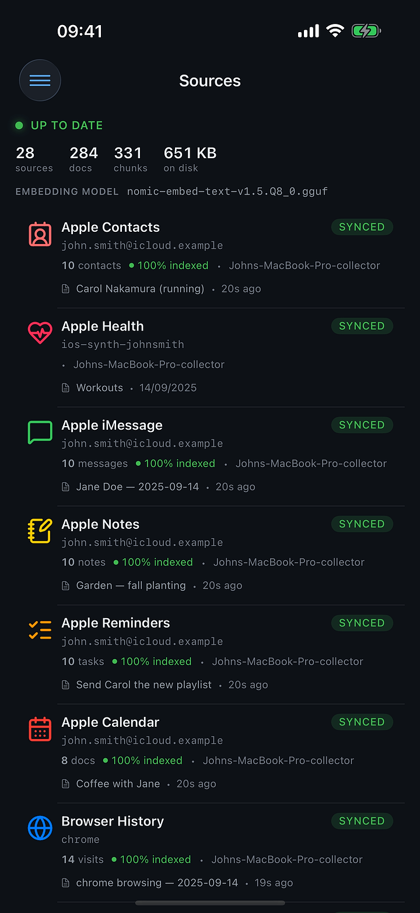
Ask on the go,
without reaching for your phone
Say “Hey Siri, ask Omnesis,” then dictate your question. Omnesis searches the same private index and returns the answer on your Apple Watch — on screen and spoken aloud.
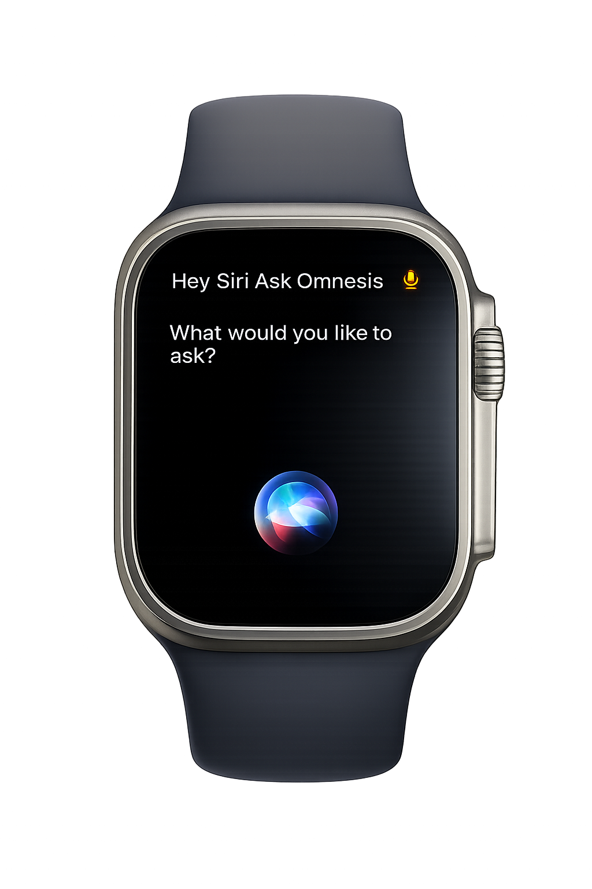
Get notified about major Omnesis updates.
Big releases and new sources — a few emails a year, no spam.